Introduction to the Human Body: Bones, Muscles, and Skin
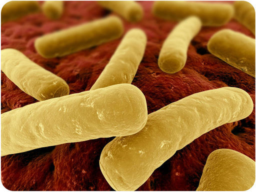
This image represents bacteria on the surface of an animal organ. To give you an idea of the scale of the image, the cylindrical yellow objects are the bacterial cells. Here’s another hint: the image shows a tiny part of what represents the largest organ of the human body. Now can you guess what it is? Is it the stomach? The heart? The answer may surprise you. It’s the human skin.
The word
organ
may bring to mind internal organs such as the stomach or heart, but the skin is an organ too. The skin is thin, averaging only 2 mm in thickness, but it covers a large area—about 2 m
2
in adults, making it the largest organ of the human body. You will learn more about the skin and how these organs come together to form the human body when you read this chapter.
Organization of the Human Body
Lesson Objectives
-
Outline the levels of organization of the human body.
-
Explain how organ systems maintain homeostasis of the body.
Vocabulary
-
connective tissue
-
epithelial tissue
-
muscle tissue
-
nervous tissue
Introduction
Many people have compared the human body to a machine. Think about some common machines, such as drills and washing machines. Each machine consists of many parts, and each part does a specific job, yet all the parts work together to perform an overall function. The human body is like a machine in all these ways. In fact, it may be the most fantastic machine on Earth, as you will discover when you learn more about it in this and the remaining chapters of this FlexBook.
As a preview of the human machine, the Emmy award-winning video at this link is highly recommended:
http://www.youtube.com/watch?v=chqwSh4ii84&feature=related
.
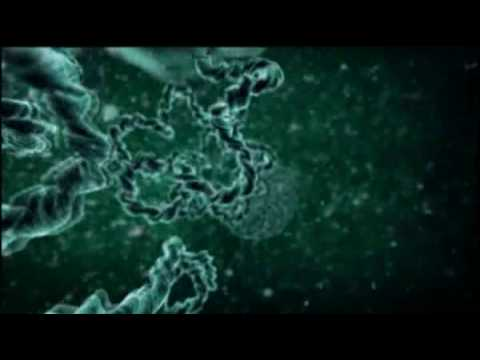
Click on the image above for more content
Levels of Organization
The human machine is organized at different levels, starting with the cell and ending with the entire organism (see
Figure
below
). At each higher level of organization, there is a greater degree of complexity.
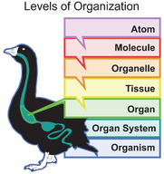
Just like this bird, the human organism has several levels of organization.
Cells
The most basic parts of the human machine are cells—an amazing 100 trillion of them by the time the average person reaches adulthood! Cells are the basic units of structure and function in the human body, as they are in all living things. Each cell carries out basic life processes that allow the body to survive. Many human cells are specialized in form and function, as shown in
Figure
below
. Each type of cell in the figure plays a specific role. For example, nerve cells have long projections that help them carry electrical messages to other cells. Muscle cells have many mitochondria that provide the energy they need to move the body.
You can watch a video about some of the specialized cells of the human body and how they function at this link:
http://www.youtube.com/watch?v=I8uXewS9dJU&feature=related
.
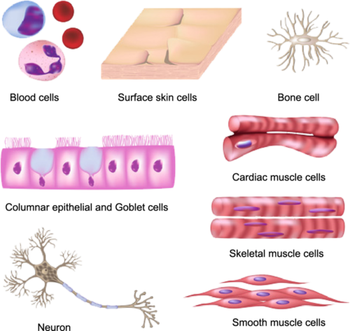
Different types of cells in the human body are specialized for specific jobs. Do you know the functions of any of the cell types shown here?
Tissues
After the cell, the tissue is the next level of organization in the human body. A tissue is a group of connected cells that have a similar function. There are four basic types of human tissues: epithelial, muscle, nervous, and connective tissues. These four tissue types, which are shown in
Figure
below
, make up all the organs of the human body.
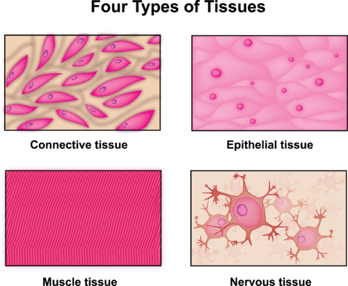
The human body consists of these four tissue types.
-
Connective tissue
is made up of cells that form the body’s structure. Examples include bone and cartilage.
-
Epithelial tissue
is made up of cells that line inner and outer body surfaces, such as the skin and the lining of the digestive tract. Epithelial tissue protects the body and its internal organs, secretes substances such as hormones, and absorbs substances such as nutrients.
-
Muscle tissue
is made up of cells that have the unique ability to contract, or become shorter. Muscles attached to bones enable the body to move.
-
Nervous tissue
is made up of neurons, or nerve cells, that carry electrical messages. Nervous tissue makes up the brain and the nerves that connect the brain to all parts of the body.
Organs and Organ Systems
After tissues, organs are the next level of organization of the human body. An organ is a structure that consists of two or more types of tissues that work together to do the same job. Examples of human organs include the brain, heart, lungs, skin, and kidneys. Human organs are organized into organ systems, many of which are shown in
Figure
below
. An organ system is a group of organs that work together to carry out a complex overall function. Each organ of the system does part of the larger job.
You can watch overviews of the human organ systems and their functions at the links below.
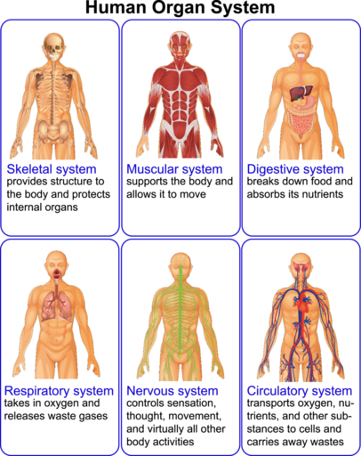
Many of the organ systems that make up the human body are represented here. What is the overall function of each organ system?
A Well-Oiled Machine
All of the organs and organ systems of the human body work together like a well-oiled machine. This is because they are closely regulated by the nervous and endocrine systems. The nervous system controls virtually all body activities, and the endocrine system secretes hormones that regulate these activities. Functioning together, the organ systems supply body cells with all the substances they need and eliminate their wastes. They also keep temperature, pH, and other conditions at just the right levels to support life processes.
Maintaining Homeostasis
The process in which organ systems work to maintain a stable internal environment is called homeostasis. Keeping a stable internal environment requires constant adjustments. Here are just three of the many ways that human organ systems help the body maintain homeostasis:
-
Respiratory system: A high concentration of carbon dioxide in the blood triggers faster breathing. The lungs exhale more frequently, which removes carbon dioxide from the body more quickly.
-
Excretory system: A low level of water in the blood triggers retention of water by the kidneys. The kidneys produce more concentrated urine, so less water is lost from the body.
-
Endocrine system: A high concentration of sugar in the blood triggers secretion of insulin by an endocrine gland called the pancreas. Insulin is a hormone that helps cells absorb sugar from the blood.
Failure of Homeostasis
Many homeostatic mechanisms such as these work continuously to maintain stable conditions in the human body. Sometimes, however, the mechanisms fail. When they do, cells may not get everything they need, or toxic wastes may accumulate in the body. If homeostasis is not restored, the imbalance may lead to disease or even death.
Lesson Summary
-
The human body is organized at different levels, starting with the cell. Cells are organized into tissues, and tissues form organs. Organs are organized into organ systems such as the skeletal and muscular systems.
-
All of the organ systems of the body work together to maintain homeostasis of the organism. If homeostasis fails, death or disease may result.
Lesson Review Questions
Recall
1. What are the levels of organization of the human body?
2. Which type of tissue covers the surface of the body?
3. What are the functions of the skeletal system?
4. Which organ system supports the body and allows it to move?
5. What is homeostasis?
6. Describe how one of the human organ systems helps maintain homeostasis.
Apply Concepts
7. A house has several systems, such as the electrical system, plumbing system, and heating and cooling system. In what ways are the systems of a house similar to human body systems?
Think Critically
8. Explain how form and function are related in human cells. Include examples.
9. Compare and contrast epithelial and muscle tissues.
Points to Consider
In this lesson, you learned that an organ system is a group of organs that work together to do a common job. You also learned that organ systems help maintain homeostasis of the body.
-
The skeletal system is one of the human organ systems. Can you name the organs of the skeletal system?
-
How do you think the skeletal system helps the body maintain homeostasis?
The Skeletal System
Lesson Objectives
-
Give an overview of the human skeleton and its functions.
-
Describe the cells and tissues that make up bones.
-
Explain how bones grow and develop.
-
Distinguish different types of joints and how they move.
-
List common problems that may affect bones and joints.
Vocabulary
-
bone marrow
-
bone matrix
-
compact bone
-
joint
-
ligament
-
ossification
-
osteoblast
-
osteoclast
-
osteocyte
-
periosteum
-
skeletal system
-
spongy bone
Introduction
The
skeletal system
consists of all the bones of the body. How important are your bones? Try to imagine what you would look like without them. You would be a soft, wobbly pile of skin, muscles, and internal organs, so you might look something like a very large slug. Not that you would be able to see yourself—folds of skin would droop down over your eyes and block your vision because of your lack of skull bones. You could push the skin out of the way, if you could only move your arms, but you need bones for that as well!
The Skeleton
The human skeleton is an internal framework that, in adults, consists of 206 bones, most of which are shown in
Figure
below
. Bones are described in detail in the following sections of this lesson, as well as in the animation “Bones Narrated” at the link below. In addition to bones, the skeleton also consists of cartilage and ligaments.
http://www.medtropolis.com/vbody.asp
-
Cartilage is a type of dense connective tissue, made of tough protein fibers, that provides a smooth surface for the movement of bones at joints.
-
A
ligament
is a band of fibrous connective tissue that holds bones together and keeps them in place.
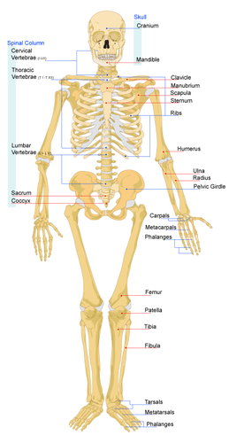
The human skeleton consists of bones, cartilage, and ligaments.
The skeleton supports the body and gives it shape. It has several other functions as well, including:
-
protecting internal organs
-
providing attachment surfaces for muscles
-
producing blood cells
-
storing minerals
-
maintaining mineral homeostasis.
Maintaining mineral homeostasis is a very important function of the skeleton, because just the right levels of calcium and other minerals are needed in the blood for normal functioning of the body. When mineral levels in the blood are too high, bones absorb some of the minerals and store them as mineral salts, which is why bones are so hard. When blood levels of minerals are too low, bones release some of the minerals back into the blood, thus restoring homeostasis.
Structure of Bones
Many people think of bones as being dead, dry, and brittle. These adjectives correctly describe the bones of a preserved skeleton, but the bones in a living human being are very much alive. As shown in
Figure
below
, the basic structure of bones is
bone matrix
, which forms the underlying rigid framework of bones, formed of both compact and spongy bone. The bone matrix consists of tough protein fibers—mainly collagen—that become hard and rigid due to mineralization with calcium crystals. Bone matrix is crisscrossed by blood vessels and nerves and also contains specialized bone cells that are actively involved in metabolic processes.
You can watch an animated video of bone matrix and other structures of bone at this link:
http://www.youtube.com/watch?v=4qTiw8lyYbs
.
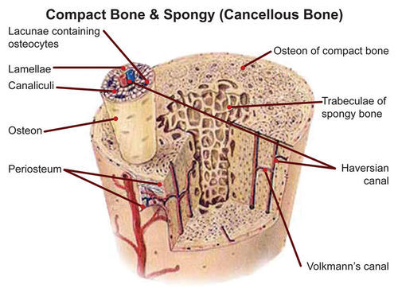
Bone matrix provides bones with their basic structure. Notice the spongy bone in the middle, and the compact bone towards the outer region. The osteon is the functional unit of compact bone.
Bone Cells
There are three types of specialized cells in human bones: osteoblasts, osteocytes, and osteoclasts. These cells are responsible for bone growth and mineral homeostasis.
-
Osteoblasts
make new bone cells and secrete collagen that mineralizes to become bone matrix. They are responsible for bone growth and the uptake of minerals from the blood.
-
Osteocytes
regulate mineral homeostasis. They direct the uptake of minerals from the blood and the release of minerals back into the blood as needed.
-
Osteoclasts
dissolve minerals in bone matrix and release them back into the blood.
Bones are far from static, or unchanging. Instead, they are dynamic, living tissues that are constantly being reshaped. Under the direction of osteocytes, osteoblasts continuously build up bone, while osteoclasts continuously break it down. You can watch an animated video of these processes in bone at
http://www.youtube.com/watch?v=yENNqRJ2mu0&feature=related
.
Bone Tissues
Bones consist of different types of tissue, including compact bone, spongy bone, bone marrow, and periosteum. All of these tissue types are shown in
Figure
below
.
-
Compact bone
makes up the dense outer layer of bone. It is very hard and strong.
-
Spongy bone
is found inside bones and is lighter and less dense than compact bone. This is because spongy bone is porous.
-
Bone marrow
is a soft connective tissue that produces blood cells. It is found inside the pores of spongy bone.
-
Periosteum
is a tough, fibrous membrane that covers and protects the outer surfaces of bone.
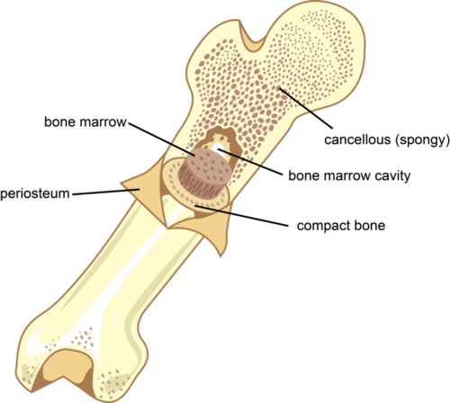
This bone contains different types of bone tissue. How does each type of tissue contribute to the functions of bone?
Growth and Development of Bones
Early in the development of a human fetus, the skeleton is made entirely of cartilage. The relatively soft cartilage gradually turns into hard bone through
ossification
. This is a process in which mineral deposits replace cartilage. As shown in
Figure
below
, ossification of long bones, which are found in the arms and legs, begins at the center of the bones and continues toward the ends. By birth, several areas of cartilage remain in the skeleton, including the ends of the long bones. This cartilage grows as the long bones grow, so the bones can keep increasing in length during childhood.
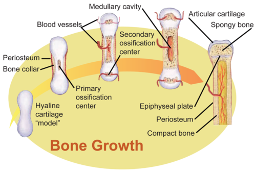
Long bones ossify and get longer as they grow and develop.
In the late teens or early twenties, a person reaches skeletal maturity. By then, all of the cartilage has been replaced by bone, so no further growth in bone length is possible. However, bones can still increase in thickness. This may occur in response to increased muscle activity, such as weight training.
Joints
A
joint
is a place where two or more bones of the skeleton meet. With the help of muscles, joints work like mechanical levers, allowing the body to move with relatively little force. The surfaces of bones at joints are covered with a smooth layer of cartilage that reduces friction at the points of contact between the bones.
Types of Joints
There are three main types of joints: immovable, partly movable, and movable. For a video about these types of joints, go to the following link:
http://www.youtube.com/watch?v=SOMFX_83sqk
.
-
Immovable joints allow no movement because the bones at these joints are held securely together by dense collagen. The bones of the skull are connected by immovable joints.
-
Partly movable joints allow only very limited movement. Bones at these joints are held in place by cartilage. The ribs and sternum are connected by partly movable joints.
-
Movable joints allow the most movement. Bones at these joints are connected by ligaments. Movable joints are the most common type of joints in the body, so they are described in more detail next.
Movable Joints
Movable joints are also known as synovial joints. This is because the space between the bones is filled with a thick fluid, called synovial fluid, that cushions the joint (see
Figure
below
).
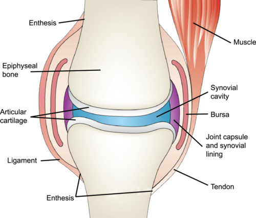
A movable, or synovial, joint is protected and cushioned by cartilage and synovial fluid.
There are a variety of types of movable joints, which are illustrated in
Figure
below
. The joints are classified by how they move. For example, a ball-and-socket joint, such as the shoulder, has the greatest range of motion, allowing movement in several directions. Other movable joints, including hinge joints such as the knee, allow less movement.
You can watch an animation of movable joints and how they function at this link:
http://www.youtube.com/watch?v=zWo9-3GJpr8&feature=related
.
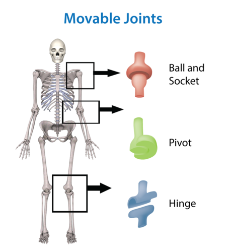
Types of Movable Joints in the Human Skeleton. Movable joints can move in a variety of ways. Try moving each of the joints indicated in the diagram. Can you tell how their movements differ? Other joints in the human skeleton that are not depicted here include saddle, elipsoid, and plane joints.
Skeletal System Problems
Despite their hardness and strength, bones can suffer from injury and disease. Bone problems include fractures, osteoarthritis, and rickets.
-
Fractures are breaks in bone, usually caused by excessive stress on bone. Fractures heal when osteoclasts form new bone. The animation at this link shows how this happens:
http://www.youtube.com/watch?v=qVougiCEgH8&feature=PlayList&p=33EEC8ACDC4F4B45&playnext_from=PL&playnext=1&index=2
.
-
Osteoarthritis is a condition in which cartilage breaks down in joints due to wear and tear, causing joint stiffness and pain.
-
Rickets is softening of the bones in children that occurs because bones do not have enough calcium. Rickets can lead to fractures and bowing of the leg bones, which is illustrated in the
Figure
below
.
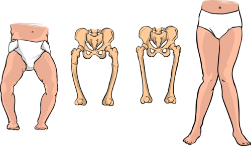
The bones of a child with rickets are so soft that the weight of the body causes them to bend.
Lesson Summary
-
The adult human skeleton includes 206 bones and other tissues. It supports the body, protects internal organs, produces blood cells, and maintains mineral homeostasis.
-
Under the direction of osteocytes, osteoblasts continuously build up bone, while osteoclasts continuously break down bone to maintain mineral homeostasis. Bone tissues include compact bone, spongy bone, bone marrow, and periosteum.
-
Bones become increasingly ossified and grow larger during fetal development, childhood, and adolescence. When skeletal maturity is reached at about age 20, no additional growth in bone length can occur.
-
Joints are places where two or more bones of the skeleton meet. With the help of muscles, joints allow the body to move with relatively little force. Some joints can move more than others.
-
Skeletal system problems include fractures, osteoarthritis, and rickets.
Lesson Review Questions
Recall
1. What is cartilage? What is its role in the skeletal system?
2. List three functions of the human skeleton.
3. Identify the three types of specialized bone cells and what they do.
4. Define immovable joint, and give an example of bones that are connected by this type of joint.
5. Describe the movement of a pivot joint, such as the elbow.
Apply Concepts
6. A newborn baby has a soft spot on the top of its head. Over the next few months, the soft spot gradually hardens. What explains this?
7. Jana is 17 years old and 172 cm tall. She plays basketball and hopes to grow at least 4 cm more before she turns 18 and goes to college. Jana recently injured her leg, and her doctor took an X-ray of it. Based on the X-ray, the doctor determined that Jana had reached skeletal maturity. How much taller is Jana likely to grow? Explain your answer.
Think Critically
8. Explain how bones maintain mineral homeostasis in the body.
9. Compare and contrast the structure and function of compact bone and spongy bone.
10. Osteoporosis is a disease in which osteoclasts are more active than osteoblasts. How is this likely to affect the bones? Why would a person with osteoporosis have a greater-than-normal risk of bone fractures?
Points to Consider
Human organ systems work together to carry out many of their functions. The skeletal and muscular systems are no exception.
-
Do you know how the skeletal and muscular systems work together?
-
How do you think muscles are able to move bones?
The Muscular System
Lesson Objectives
-
Identify and describe the three types of human muscle tissue.
-
Describe the structure of skeletal muscles, and explain how they move bones.
-
Explain how muscles contract according to the sliding filament theory.
Vocabulary
-
cardiac muscle
-
muscle fiber
-
muscular system
-
skeletal muscle
-
sliding filament theory
-
smooth muscle
-
tendon
Introduction
The
muscular system
consists of all the muscles of the body. Does the word
muscle
make you think of the bulging biceps of a weightlifter, like the man in
Figure
below
? Muscles such as biceps that move the body are easy to feel and see, but they aren’t the only muscles in the human body. Many muscles are deep within the body. They form the walls of internal organs such as the heart and stomach. You can flex your biceps like a body builder but you cannot control the muscles inside you. It’s a good thing that they work on their own without any conscious effort your part, because movement of these muscles is essential for survival.
This weightlifter works hard to build big muscles in his upper arms.
What Are Muscles?
Muscles are organs composed mainly of muscle cells, which are also called
muscle fibers
. Each muscle fiber is a very long, thin cell that can do something no other cell can do. It can contract, or shorten. Muscle contractions are responsible for virtually all the movements of the body, both inside and out. There are three types of muscle tissues in the human body: cardiac, smooth, and skeletal muscle tissues. They are shown in
Figure
below
and described below. You can also watch an overview of the three types at this link:
http://www.youtube.com/watch?v=TermIXEkavY
.
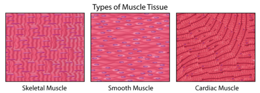
Types of Muscle Tissue. This artist's rendition shows that both skeletal and cardiac muscles appear striated, or striped, because their cells are arranged in bundles. Smooth muscles are not striated because their cells are arranged in sheets instead of bundles.
Smooth Muscle
Muscle tissue in the walls of internal organs such as the stomach and intestines is
smooth muscle
. When smooth muscle contracts, it helps the organs carry out their functions. For example, when smooth muscle in the stomach contracts, it squeezes the food inside the stomach, which helps break the food into smaller pieces. Contractions of smooth muscle are involuntary. This means they are not under conscious control.
Skeletal Muscle
Muscle tissue that is attached to bone is
skeletal muscle
. Whether you are blinking your eyes or running a marathon, you are using skeletal muscle. Contractions of skeletal muscle are voluntary, or under conscious control. Skeletal muscle is the most common type of muscle in the human body, so it is described in more detail below.
Cardiac Muscle
Cardiac muscle
is found only in the walls of the heart. When cardiac muscle contracts, the heart beats and pumps blood. Cardiac muscle contains a great many mitochondria, which produce ATP for energy. This helps the heart resist fatigue. Contractions of cardiac muscle are involuntary like those of smooth muscle.
Skeletal Muscles
There are well over 600 skeletal muscles in the human body, some of which are identified in
Figure
below
. Skeletal muscles vary considerably in size, from tiny muscles inside the middle ear to very large muscles in the upper leg.
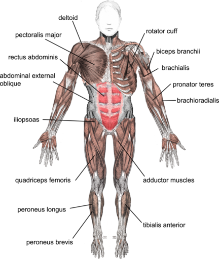
Skeletal Muscles. Skeletal muscles enable the body to move.
Structure of Skeletal Muscles
Each skeletal muscle consists of hundreds or even thousands of skeletal muscle fibers. The fibers are bundled together and wrapped in connective tissue as shown
Figure
below
. The connective tissue supports and protects the delicate muscle cells and allows them to withstand the forces of contraction. It also provides pathways for nerves and blood vessels to reach the muscles. Skeletal muscles work hard to move body parts. They need a rich blood supply to provide them with nutrients and oxygen and to carry away their wastes. You can watch a video about skeletal muscle structure and how skeletal muscles work at this link:
http://www.youtube.com/watch?v=XoP1diaXVCI
.
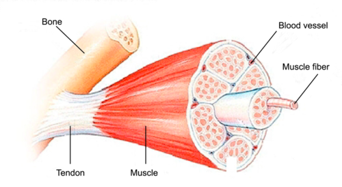
Skeletal Muscle Structure. A skeletal muscle contains bundles of muscle fibers inside a “coat” of connective tissue.
The Anatomy of a Muscle Cell
is available at
http://www.youtube.com/user/khanacademy#p/c/7A9646BC5110CF64/48/uY2ZOsCnXIA
(16:32).
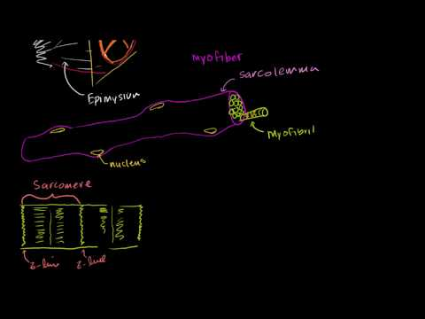
Click on the image above for more content
Skeletal Muscles and Bones
Skeletal muscles are attached to the skeleton by tough connective tissues called
tendons
(see
Figure
above
). Many skeletal muscles are attached to the ends of bones that meet at a joint. The muscles span the joint and connect the bones. When the muscles contract, they pull on the bones, causing them to move. You can watch a video showing how muscles and bones move together at this link:
http://www.youtube.com/watch?v=7Rzi7zYlWno&feature=related
. Muscles can only contract. They cannot actively extend, or lengthen. Therefore, to move bones in opposite directions, pairs of muscles must work in opposition. For example, the biceps and triceps muscles of the upper arm work in opposition to bend and extend the arm at the elbow (see
Figure
below
). You can watch an animation of these two muscles working in opposition at the link below. What other body movements do you think require opposing muscle pairs?
http://www.youtube.com/watch?v=T-ozRNVhGVg&feature=related
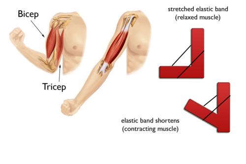
Triceps and biceps muscles in the upper arm are opposing muscles.
Use It or Lose It
In exercises such as weight lifting, skeletal muscle contracts against a resisting force (see
Figure
below
). Using skeletal muscle in this way increases its size and strength. In exercises such as running, the cardiac muscle contracts faster and the heart pumps more blood. Using cardiac muscle in this way increases its strength and efficiency. Continued exercise is necessary to maintain bigger, stronger muscles. If you don’t use a muscle, it will get smaller and weaker—so use it or lose it.
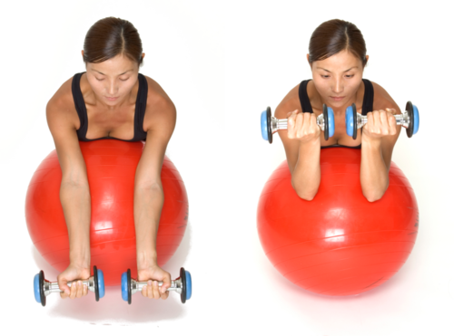
This exercise pits human muscles against a force. What force is it?
Muscle Contraction
Muscle contraction occurs when muscle fibers get shorter. Literally, the muscle fibers get smaller in size. To understand how this happens, you need to know more about the structure of muscle fibers.
Structure of Muscle Fibers
Each muscle fiber contains hundreds of organelles called myofibrils. Each myofibril is made up of two types of protein filaments: actin filaments, which are thinner, and myosin filaments, which are thicker. Actin filaments are anchored to structures called Z lines (see
Figure
below
). The region between two Z lines is called a sarcomere. Within a sarcomere, myosin filaments overlap the actin filaments. The myosin filaments have tiny structures called cross bridges that can attach to actin filaments.
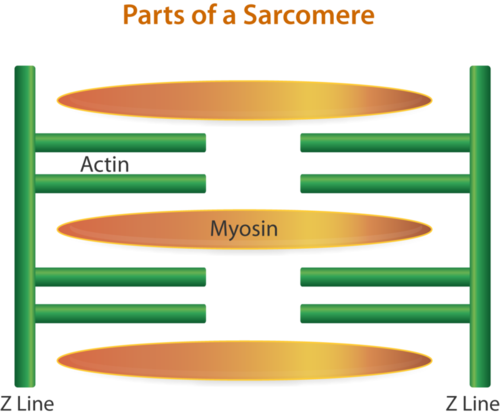
Sarcomere. A sarcomere contains actin and myosin filaments between two Z lines.
Sliding Filament Theory
The most widely accepted theory explaining how muscle fibers contract is called the
sliding filament theory
. According to this theory, myosin filaments use energy from ATP to “walk” along the actin filaments with their cross bridges. This pulls the actin filaments closer together. The movement of the actin filaments also pulls the Z lines closer together, thus shortening the sarcomere. You can watch this occurring in a video animation at
http://www.youtube.com/watch?v=7V-zFVnFkWg&feature=related
. When all of the sarcomeres in a muscle fiber shorten, the fiber contracts. A muscle fiber either contracts fully or it doesn’t contract at all. The number of fibers that contract determines the strength of the muscular force. When more fibers contract at the same time, the force is greater.
Actin, myosin and muscle contraction are discussed at
http://www.youtube.com/user/khanacademy#p/c/7A9646BC5110CF64/45/zopoN2i7ALQ
(9:38).
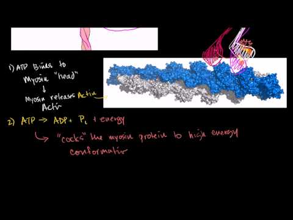
Click on the image above for more content
Additional information about muscle contraction is available at
http://www.youtube.com/user/khanacademy#p/c/7A9646BC5110CF64/46/LiOfeSsjrB8
(9:22) and
http://www.youtube.com/user/khanacademy#p/c/7A9646BC5110CF64/47/SauhB2fYQkM
(14:42).
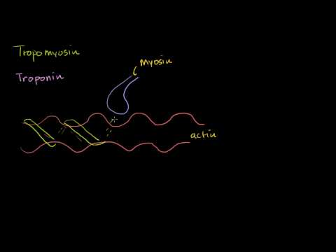
Click on the image above for more content
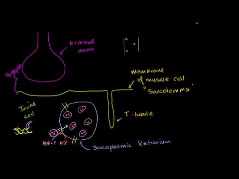
Click on the image above for more content
Muscles and Nerves
Muscles cannot contract on their own. They need a stimulus from a nerve cell to “tell” them to contract. Let’s say you decide to raise your hand in class. Your brain sends electrical messages to nerve cells, called motor neurons, in your arm and shoulder. The motor neurons, in turn, stimulate muscle fibers in your arm and shoulder to contract, causing your arm to rise. Involuntary contractions of cardiac and smooth muscles are also controlled by nerves.
Lesson Summary
-
There are three types of human muscle tissue: smooth muscle (in internal organs), skeletal muscle, and cardiac muscle (only in the heart).
-
Skeletal muscles are attached to the skeleton and cause bones to move when they contract.
-
According to the sliding filament theory, a muscle fiber contracts when myosin filaments pull actin filaments closer together and thus shorten sarcomeres within a fiber. When all the sarcomeres in a muscle fiber shorten, the fiber contracts.
Lesson Review Questions
Recall
1. What can muscle cells do that other cells cannot?
2. Why are skeletal and cardiac muscles striated?
3. Where is smooth muscle tissue found?
4. What is the function of skeletal muscle?
5. How are skeletal muscles attached to bones?
Apply Concepts
6. A serious neck injury may leave a person paralyzed from the neck down. Explain why.
Think Critically
7. Compare and contrast the three types of muscle tissue.
8. Explain why many skeletal muscles must work in opposing pairs.
9. Explain how muscles contract according to the sliding filament theory.
Points to Consider
Bones and muscles are organs. They are contained within the skin, which is also an organ.
-
Do you know which organ system the skin belongs to?
-
What other organs might belong to the same organ system as the skin?
The Integumentary System
Lesson Objectives
-
Describe the skin and its functions, and identify common skin problems.
-
Outline the structure and functions of the hair and nails.
Vocabulary
-
dermis
-
epidermis
-
hair follicle
-
integumentary system
-
melanin
-
sebaceous gland
-
sweat gland
Introduction
The skin is the major organ of the
integumentary system
, which also includes the nails and hair. Because these organs are external to the body, you may think of them as little more than “accessories,” like clothing or jewelry, but the organs of the integumentary system serve important biological functions. They provide a protective covering for the body and help the body maintain homeostasis. For an overview of the integumentary system, you can watch the animation at this link:
http://www.youtube.com/watch?v=IAAt_MfIJ-Y
.
The Skin
The skin is the body’s largest organ and a remarkable one at that. Consider these skin facts. The average square inch (6.5 cm
2
) of skin has 20 blood vessels, 650 sweat glands, and more than a thousand nerve endings. It also has an incredible 60,000 pigment-producing cells. All of these structures are packed into a stack of cells that is just 2 mm thick, or about as thick as the cover of a book.
You can watch an excellent video introduction to the skin and its marvels at the following link:
http://www.youtube.com/watch?v=uH_uzjY2bEE&feature=fvw
.
Although the skin is thin, it consists of two distinct layers, called the epidermis and the dermis. These layers are shown in
Figure
below
. You can watch animations of the two layers of skin and how they function at these links:
http://www.youtube.com/watch?v=d-IJhAWrsm0&feature=related
and
http://www.youtube.com/watch?v=c_IGuPYLsFI&feature=related
.
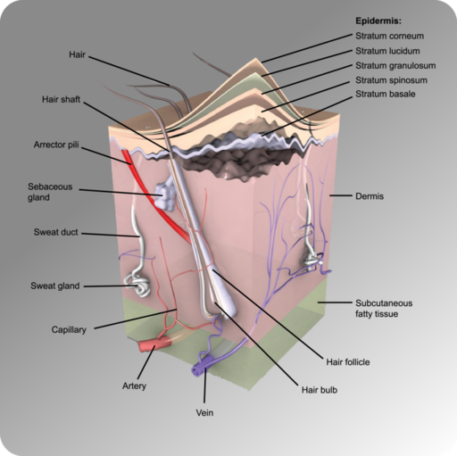
Layers of Human Skin. The outer layer of the skin is the epidermis, and the inner layer is the dermis. Most skin structures originate in the dermis.
Epidermis
The
epidermis
is the outer layer of skin, consisting of epithelial cells and little else (see
Figure
below
). For example, there are no nerve endings or blood vessels in the epidermis. The innermost cells of the epidermis are continuously dividing through mitosis to form new cells. The newly formed cells move up through the epidermis toward the skin surface, while producing a tough, fibrous protein called keratin. The cells become filled with keratin and die by the time they reach the surface, where they form a protective, waterproof layer called the stratum corneum. The dead cells are gradually shed from the surface of the skin and replaced by other cells.
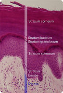
Cell Layers of the Epidermis. The epidermis consists mainly of epithelial cells.
The epidermis also contains melanocytes, which are cells that produce melanin.
Melanin
is the brownish pigment that gives skin much of its color. Everyone has about the same number of melanocytes, but the melanocytes of people with darker skin produce more melanin. The amount of melanin produced is determined by heredity and exposure to UV light, which increases melanin output. Exposure to UV light also stimulates the skin to produce vitamin D. Because melanin blocks UV light from penetrating the skin, people with darker skin may be at greater risk of vitamin D deficiency.
Dermis
The
dermis
is the lower layer of the skin, located directly beneath the epidermis (see
Figure
below
). It is made of tough connective tissue and attached to the epidermis by collagen fibers. The dermis contains blood vessels and nerve endings. Because of the nerve endings, skin can feel touch, pressure, heat, cold, and pain. The dermis also contains hair follicles and two types of glands.
-
Hair follicles
are the structures where hairs originate. Hairs grow out of follicles, pass through the epidermis, and exit at the surface of the skin.
-
Sebaceous glands
produce an oily substance called sebum. Sebum is secreted into hair follicles and makes its way to the skin surface. It waterproofs the hair and skin and helps prevent them from drying out. Sebum also has antibacterial properties, so it inhibits the growth of microorganisms on the skin.
-
Sweat glands
produce the salty fluid called sweat, which contains excess water, salts, and other waste products. The glands have ducts that pass through the epidermis and open to the surface through pores in the skin.
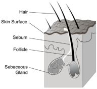
Structures of the Dermis. The dermis contains most of the structures found in skin.
Functions of the Skin
The skin has multiple roles in the body. Many of these roles are related to homeostasis. The skin’s main functions are preventing water loss from the body and serving as a barrier to the entry of microorganisms. In addition, melanin in the skin blocks UV light and protects deeper layers from its damaging effects.
The skin also helps regulate body temperature. When the body is too warm, sweat is released by the sweat glands and spreads over the skin surface. As the sweat evaporates, it cools the body. Blood vessels in the skin also dilate, or widen, when the body is too warm. This allows more blood to flow through the skin, bringing body heat to the surface, where it radiates into the environment. When the body is too cool, sweat glands stop producing sweat, and blood vessels in the skin constrict, or narrow, thus conserving body heat.
Skin Problems
In part because it is exposed to the environment, the skin is prone to injury and other problems. Two common problems of the skin are acne and skin cancer (see
Figure
below
).
-
Acne is a condition in which red bumps called pimples form on the skin due to a bacterial infection. It affects more than 85 percent of teens and may continue into adulthood. The underlying cause of acne is excessive secretion of sebum, which plugs hair follicles and makes them good breeding grounds for bacteria. At the following link, you can watch an animation showing how acne develops:
http://www.youtube.com/watch?v=11I7ONVqcc0
.
-
Skin cancer is a disease in which skin cells grow out of control. It is caused mainly by excessive exposure to UV light. People with lighter skin are at greater risk of developing skin cancer because they have less melanin to block harmful UV radiation. The best way to prevent skin cancer is to avoid UV exposure by using sunscreen and wearing protective clothing.

ABCDs of Skin Cancer. A brown spot on the skin is likely to be a harmless mole, but it could be a sign of skin cancer. Unlike moles, skin cancers are generally asymmetrical, have irregular borders, may be very dark in color, and may have a relatively great diameter.
Nails and Hair
In addition to the skin, the integumentary system includes the nails and hair. Like the skin, these organs help the body maintain homeostasis.
Nails
Fingernails and toenails consist of specialized epidermal cells that are filled with keratin. The keratin makes them tough and hard, which is important for the functions they serve. Fingernails prevent injury by forming protective plates over the ends of the fingers. They also enhance sensation by acting as a counterforce to the sensitive fingertips when objects are handled.
Hair
Hair is a fiber that is found only in mammals. Its main component is keratin. A hair shaft consists of dead, keratin-filled cells that overlap each other like the shingles on a roof (see
Figure
below
). Like roof shingles, the overlapping cells help shed water from the hair.
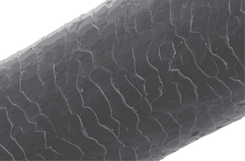
Shaft of Human Hair. This shaft of hair is magnified to show its overlapping cells.
Hair helps to insulate and protect the body. Head hair is especially important in preventing heat loss from the body. Eyelashes and eyebrows protect the eyes from water, dirt, and other irritants. Hairs in the nose trap dust particles and microorganisms in the air and prevent them from reaching the lungs. Hair also provides sensory input when objects brush against it or it sways in moving air.
Lesson Summary
-
The skin consists of two layers: the epidermis, which contains mainly epithelial cells, and the dermis, which contains most of skin’s other structures, including blood vessels, nerve endings, hair follicles, and glands.
-
Skin protects the body from injury, water loss, and microorganisms. It also plays a major role in maintaining a stable body temperature. Common skin problems include acne and skin cancer.
-
Nails and hair contain mostly keratin. They protect the body and enhance the sense of touch.
Lesson Review Questions
Recall
1. What organs make up the integumentary system?
2. Describe how new epidermal cells form, develop, and are shed from the body.
3. What is keratin? What role does it play in the organs of the integumentary system?
4. What is the function of the stratum corneum?
5. What causes acne?
Apply Concepts
6. Assume that you get a paper cut, but it doesn’t bleed. How deep is the cut? How do you know?
7. Skin cancer has been increasing over recent decades. What could explain this? (
Hint:
What is the main cause of skin cancer?)
8. A certain disease causes the loss of all body hair. How might homeostasis of the body be disturbed by the absence of hair? (
Hint:
What are the functions of hair?)
Think Critically
9. Explain how melanin is related to skin color, vitamin D production, and skin cancer.
10. Explain how the skin helps the body maintain a stable temperature.
Points to Consider
In this lesson, you learned that the skin is the major organ that regulates body temperature. You also learned that acne is a common problem of the skin, especially in teens.
-
What do you think causes sweat production and dilation of blood vessels when the body becomes too warm? Do you know which organ system signals these changes to occur?
-
Why do you think acne occurs most often in teens? Which organ system might stimulate excessive sebum production in this age group?
Opening image copyright by Sebastian Kaulitzki, 2010.
http://www.shutterstock.com
. Used under license from Shutterstock.com.
References
-
LadyofHats for CK-12 Foundation. . CC-BY-NC-SA 3.0
-
Image copyright Alila Sao Mai, 2011, redone by Raymond Chou for CK-12 Foundation.
http://www.shutterstock.com
. Used under license from Shutterstock.com
-
CK-12 Foundation. . CC-BY-NC-SA 3.0
-
Images copyright alxhar, 2011, redone by Raymond Chou for CK-12 Foundation.
http://www.shutterstock.com
. Used under licenses from Shutterstock.com
-
Mariana Ruiz Villarreal.
http://commons.wikimedia.org/wiki/File:Human_skeleton_front_en.svg
. Public Domain
-
Courtesy of U.S. National Cancer Institute's Surveillance, Epidemiology and End Results (SEER) Program, redone by LadyofHats for CK-12 Foundation.
http://en.wikipedia.org/wiki/File:Illu_compact_spongy_bone.jpg
. Public Domain
-
CK-12 Foundation. . CC-BY-NC-SA 3.0
-
Courtesy of National Cancer Institute/SEER Training Modules, redone by LadyofHats for CK-12 Foundation.
http://training.seer.cancer.gov/module_anatomy/unit3_3_bone_growth.html
. Public Domain
-
Image copyright Blamb, 2012, modified by CK-12 Foundation.
http://www.shutterstock.com
. Used under license from Shutterstock.com
-
Skeleton image copyright 3drenderings, 2010, modified by CK-12 Foundation.
http://www.shutterstock.com
. Used under license from Shutterstock.com
-
Image copyright hkannn, 2012.
http://www.shutterstock.com
. Used under license from Shutterstock.com
-
Image copyright Istvan Csak, 2010.
http://www.shutterstock.com
. Used under license from Shutterstock.com
-
Image copyright Alila Sao Mai, 2012, modified by CK-12 Foundation.
http://www.shutterstock.com
. Used under license from Shutterstock.com
-
Mikael Häggström.
http://en.wikipedia.org/wiki/File:Muscles_anterior_labeled.png
. Public Domain
-
Courtesy of National Cancer Institute/SEER Training Modules, redone by Raymond Chou for CK-12 Foundation.
http://training.seer.cancer.gov/anatomy/muscular/structure.html
. Public Domain
-
Image copyright hkannn, 2010; modified by CK-12 Foundation.
http://www.shutterstock.com
. Used under license from Shutterstock.com
-
Images copyright Philip Date, 2012.
http://www.shutterstock.com
. Used under licenses from Shutterstock.com
-
CK-12 Foundation. . CC-BY-NC-SA 3.0
-
Image copyright Blamb, 2010.
http://www.shutterstock.com
. Used under license from Shutterstock.com
-
Mikael Häggström, based on work by Wbensmith.
http://commons.wikimedia.org/wiki/File:Epidermal_layers.svg
. CC-BY 3.0
-
CK-12 Foundation, modified by LadyofHats. . CC-BY-NC-SA 3.0
-
Courtesy of Skin Cancer Foundation/National Cancer Institute.
(Left to right) http://visualsonline.cancer.gov/details.cfm?imageid=2362; http://visualsonline.cancer.gov/details.cfm?imageid=2363; http://visualsonline.cancer.gov/details.cfm?imageid=2364; http://visualsonline.cancer.gov/details.cfm?imageid=2184
. All images are in the public domain
-
CK-12 Foundation. . CC-BY-NC-SA 3.0
{kind=link}
{kind=link}
{kind=link}
{kind=link}